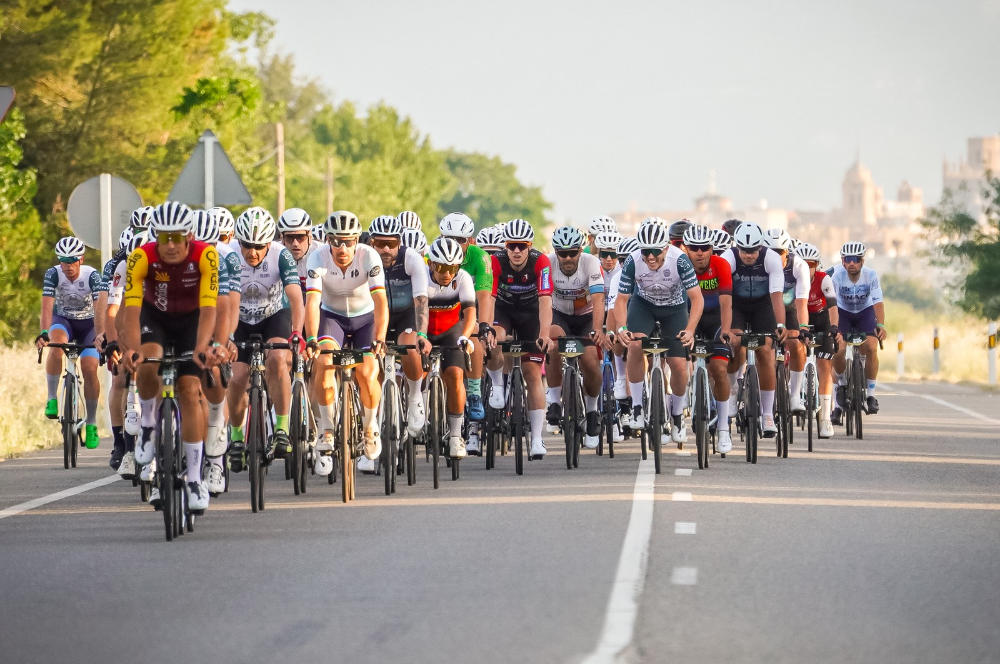
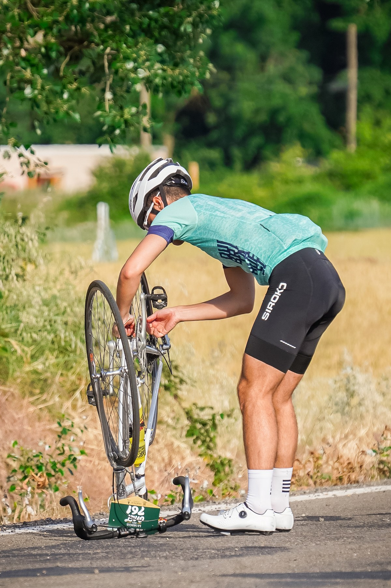

La Magia del Grial returned to Huesca on Saturday 30 May 2026 for its third edition, with event coverage by the Image Media team. Organised by Club Ciclista Oscense and the Diputación Provincial de Huesca, the cicloturista sent around 700 riders away from the Palacio de Congresos at 7:30am on closed roads, choosing between a 185km Gran Fondo with roughly 2,300m of accumulated climbing and a 117km Medio Fondo with around 1,200m of climbing, both routes sharing early sections through Piracés — noted for rock fortifications dating to the 10th century — before the Gran Fondo continued deeper into the Sierra de Guara toward the Salto de Bierge waterfall and the Somontano wine region, and the Medio Fondo branched off near Angüés on its way toward the foothills of the same range.

Cofidis professional Sergio Samitier, riding as guest of honour with bib number 1, won the Gran Fondo in 4:27:00, finishing nine minutes clear of Daniel López Fontana of Club Ciclista Edelweiss, who also took the Master +40 category, with France's Danies Camille third and the leading amateur finisher. Chus Til, of Huesca, won the women's Gran Fondo. On the Medio Fondo, Luis Aranda of Agrupación Deportiva Huecha took the men's win in 2:46:21 ahead of Antonio Marín and Iñaki Echeverría, while France's Sylvie Marco led the women's field ahead of Ana Zabala and Jennay Cervantes. Organisers classified close to 400 finishers on the Gran Fondo and 298 on the Medio Fondo. Route changes tied to roadworks on the A-132 diverted this year's course away from the Monasterio de San Juan de la Peña, previously a fixture of the marcha, and into the Sierra de Guara instead.
As in previous editions, a share of every entry fee went to Fundación Valentia under the marcha's solidarity partnership, with a dedicated "Fila Cero" category letting riders register in support without taking a start-line place.

The Image Media coverage team at La Magia del Grial comprised José Ramón Moreno, Casian Nicorescu and Leandro Rocha.